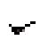
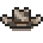

Erfolge
| Geringer Artikelumfang
Geringer Artikelumfang Dieser Artikel ist aus folgendem Grund als unvollständig gekennzeichnet:
|
Erfolge in Stardew Valley werden bei Steam angezeigt und können spezifische Belohnungen im Spiel freischalten. Während jede Leistung für Steam nur einmal freigeschaltet werden muss, müssen sie in jedem neuen Spiel separat freigeschaltet werden, um alle weiteren Belohnungen zu erhalten. In der Registerkarte "Sammlungen" werden nur verdiente Belohnungen und die nötige Leistung für diejenigen angezeigt, welche Teil einer Serie sind, z. B. einen bestimmten Gesamtbetrag verdienen.
Die meisten Erfolge schalten einzigartige Hüte frei, welche in der Bruchbude im Zundersaftwald gekauft werden können. Wenn man mit der Maus über den jeweiligen Hut in der Händlerliste fährt, bekommt man die Leistung angezeigt, welche freigeschaltet wurde. Am Tag nach Frischaltung des "Meisterangler" Erfolgs sendet Willy dem Spieler eine Sternenfall-Frucht in der Post.
Liste der Erfolge
| Steam Symbol | In-Game Symbol | Erfolg | Beschreibung | Freischaltung | |
|---|---|---|---|---|---|
 |
 |
Grünschnabel | Verdiene 15.000 G. |  |
Gute alte Kappe |
 |
 |
Cowboy | Verdiene 50.000 G. |  |
Glückbringende Schleife |
 |
 |
Heimstätter | Verdiene 250.000 G. |  |
Coole Kappe |
 |
 |
Millionär | Verdiene 1.000.000 G. |  |
Bowlerhut |
 |
 |
Legende | Verdiene 10.000.000 G. (Geheime Errungenschaft) | Sombrero | |
 |
|
Eine vollständige Sammlung | Vervollständige die Museumskollektion. |  |
Cowboyhut |
 |
|
Ein neuer Freund | Freunde dich mit jemandem an, bis die Zuneigung 5 Herzen erreicht. |  |
Schmetterlingsschleife |
|
Beste Freunde | Freunde dich mit jemandem an, bis die Zuneigung 10 Herzen erreicht. |  |
Mauseohren | |
 |
 |
Der beliebte Bauer | Erreiche mit 8 Personen jeweils eine Zuneigung von 10 Herzen. |  |
Katzenohren |
 |
 |
Cliquen | Erreiche mit 4 Personen jeweils eine Zuneigung von 5 Herzen. |  |
Tiara |
 |
|
Vernetzt | Erreiche mit 10 Personen jeweils eine Zuneigung von 5 Herzen. |  |
Winterstern-Mütze |
 |
|
Populär | Erreiche mit 20 Personen jeweils eine Zuneigung von 5 Herzen. |  |
Ohrenschützer |
 |
|
Koch | Bereite 10 verschiedene Rezepte zu. |  |
Feine Schleife |
|
Souschef | Bereite 25 verschiedene Rezepte zu. |  |
Pflaumen-Chapeau | |
 |
 |
Gourmetkoch | Bereite alle Rezepte zu. |  |
Schützenhut |
 |
 |
Ausbauen | Erweitere dein Haus. |  |
Tropiklammer |
 |
|
Das große Leben | Erweitere dein Haus auf die maximale Größe. (Zweites Upgrade, nicht der Keller) |  |
Jägerkappe |
 |
|
D.I.Y. | Stelle 15 verschiedene Gegenstände her. |  |
Gänseblümchen |
|
Handwerker | Stelle 30 verschiedene Gegenstände her. |  |
Truckerhut | |
|
Handwerksmeister | Stelle alle Gegenstände her. |  |
Gnomkappe | |
 |
|
Fischer | Fange 10 verschiedene Fische. |  |
Südwester |
 |
|
Alter Seemann | Fange 24 verschiedene Fische. |  |
Beamtenkappe |
 |
 |
Meisterangler | Fange alle Fische. |  |
Augenklappe |
|
Massiver Fang | Fange 100 Fische. |  |
Wassermelonen-Band | |
 |
|
Fundgrube | Spende dem Museum 40 verschiedene Gegenstände. |  |
Blaue Mütze |
 |
|
Laufbursche | Vollende 10 Hilfeanfragen. |  |
Gepunktete Schleife |
 |
|
Große Hilfe | Vollende 40 Hilfeanfragen. |  |
Hühnermaske |
 |
|
Polykultur | Verschicke 15 Stück von jeder Nutzpflanze. (Erfolge#Anmerkungen) |  |
Cowboy-Hut |
|
Monokultur | Verschicke 300 Stück von einer Nutzpflanze. |  |
Cowgal-Hut | |
 |
|
Volle Lieferung | Verschicke alle Gegenstände. |  |
Goblinmaske |
 |
Präriekönig | Gewinne 'Reise des Prärie-Königs'. | Prärie-König-Spielautomat | ||
 |
Der Boden | Erreiche die tiefste Ebene der Minen. | Schädelschlüssel | ||
 |
Lokale Legende | Stelle das Gemeinschaftszentrum wieder komplett her. | Sternentau-Heldenpokal | ||
 |
Joja Co. Mitglied des Jahres | Werde Joja Co. Mitglied und kaufe alle Gemeindeentwicklungsprojekte. | Getränkemaschine | ||
| Geheimnis der Stardrops | Finde alle Sternenfall-Früchte. | ||||
 |
Volles Haus | Heirate und habe zwei Kinder. | |||
| Einzigartiges Talent | Erreiche Level 10 in einer Fähigkeit. | ||||
| Meister der fünf Wege | Erreiche Level 10 in jeder Fähigkeit. | ||||
 |
Beschützer des Tales | Erfülle alle Ziele beim Monster töten der Abenteurergilde. | |||
 |
Fector's Herausforderung | Gewinne 'Reise des Prärie-Königs' ohne zu sterben. (Geheimer Erfolg) | |||
Anmerkungen
Fischen-Erfolge
Das Fangen von Grünalge, Weißalge, oder Seetang zählt zu den Anforderungen der 4 Fischen-Erfolge (Fischer, Alter Seemann, Meisterangler und Massiver Fang). Das Fangen von Müll jedoch, wird in keinster Weise zu den Fischer-Erfolgen dazugezählt. Seit Version 1.3 müssen 59 unterschiedliche Fische gefangen werden, um den "Meisterangler"-Erfolg ("Fange alle Fische") zu erhalten, ungeachtet dessen, dass es 62 unterschiedliche Fische gibt.
Polykultur
Es gibt exakt 28 Nutzpflanzen, welche über den Versandbehälter verschickt werden müssen, um den Polykultur Erfolg ("Verschicke 15 Stück von jeder Nutzpflanze") zu verdienen:[1]
Frühling
Monokultur
Um den Monokultur-Erfolg ("Verschicke 300 Stück von einer Nutzpflanze") zu verdienen, kannst du von 33 Nutzpflanzen (alle von den 28 obigen Nutzpflanzen oder der fünf unteren) wählen.[1]
Volle Lieferung
Um den Erfolg Volle Lieferung ("Verschicke alle Gegenstände") freizuschalten, muss jeder Gegenstand in dem Reiter Verschickte Gegenstände des Spielermenüs verschickt werden.
Externe Links
Benutzer mit Zugriff auf ihre gespeicherten Spiele könnten das "Stardew Valley Checkup"-Tool zur Kontrolle des Erfolgsfortschritts nützlich finden. Zu finden auf: https://mouseypounds.github.io/stardew-checkup/
Globale Spielestatistik der Erfolge für PC-Spieler auf Steam sind zu finden auf: https://steamcommunity.com/stats/413150/achievements/
Globale Spielestatistik der Erfolge für PlayStation sind zu finden auf: https://psnprofiles.com/trophies/5673-stardew-valley/
Globale Spielestatistik der Erfolge auf Xbox sind zu finden auf: https://www.trueachievements.com/game/Stardew-Valley/achievements/
Referenzen
Geschichte
- 1.4: Fehler behoben, bei dem der Erfolg Meisterangler freigeschaltet werden konnte, bevor alle Fische gefangen wurden.